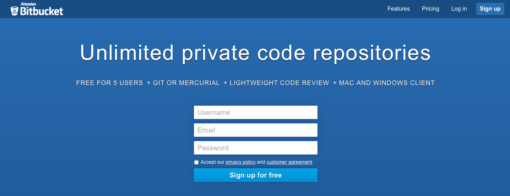
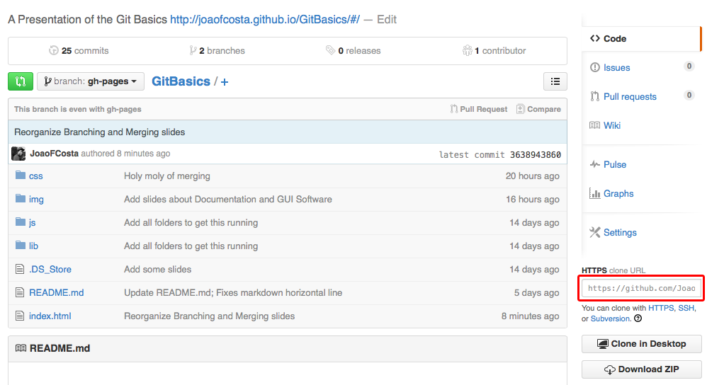
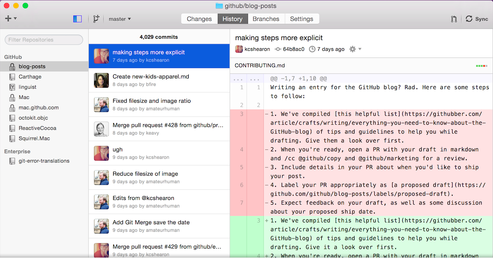
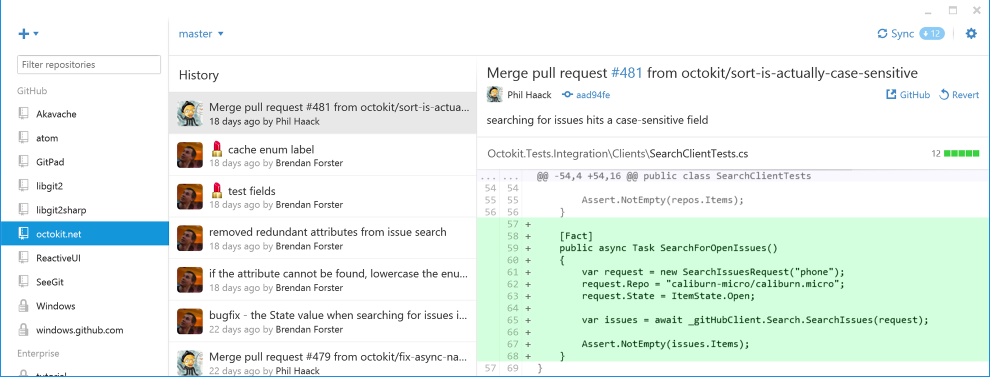

GIT
BASICS
João Costa
Martinho Aragão
What is
Version Control?
What is it good for?Why do I need it?
Routine
void routine() {
create;
while(!over){
edit;
save;
}
}Remote
What happened?
Why did it happen?
Who did it?
When?
Commits
Installing Git
Linux
Debian/Ubuntu
$ apt-get install gitArch
$ pacman -S gitFedora
$ yum install gitMac
brew install gitWindows
DownloadGit Setup
First-Time
Setup your username and email first of all to give you credit for the code you are developing.
$ git config --global user.name "John Doe"
$ git config --global user.email johndoe@example.comSee configuration
$ git config --listCreating a Git Repository
$ git init
path
will create new directory if needed
Initialises a .git directory in your folder
Git Staging
The Three States
Your files can have three states:
- Modified
- Staged
- Commited
1. Working Directory
These are the files that are under Git control and are unstaged.
2. The Staging Area
Seeing file status:
$ git statusAfter you've done your changes, you can stage files with:
$ git add <filename> (Add files)
$ git add --all (To add all files)$ git add git.c git.h3. Commiting
After adding all the files you wish to commit just run:
$ git commit$ git commit -m "Add slide about pushing to a repository"See all commits
$ git logBranches
Why Branches?
Branching
To create a branch
$ git branch test$ git checkout testOr better yet!
$ git checkout -b testListing all branchs
$ git branchMERGING
Merging
Do it when you have finished working on your feature, bug fix, etc.
- Change to the branch you wish to merge your work
- Merge the changes
$ git checkout <branch-name>$ git merge <branch-name>$ git checkout master
$ git merge testYour turn now
Working Remote
Signup for a Github account

BitBucket
Clone
$ git clone <address>Pushing
All commits done? Want to share what you've done?
$ git push origin <branch name>$ git push -u origin masterPulling
Need to grab what the others did?
This is when to use push.
$ git pull origin <branch name>$ git pull -u origin master
$ git pull Wanna learn more?
Getting Help
$ git help
$ git --help
$ man git Example: Checking config help
$ git help configGit Documentation
GUI Clients
MAC
 Download
Windows
 Download
All GUI clients
There are also other GUIs created by people outside Github.
There is a full list with download links here.